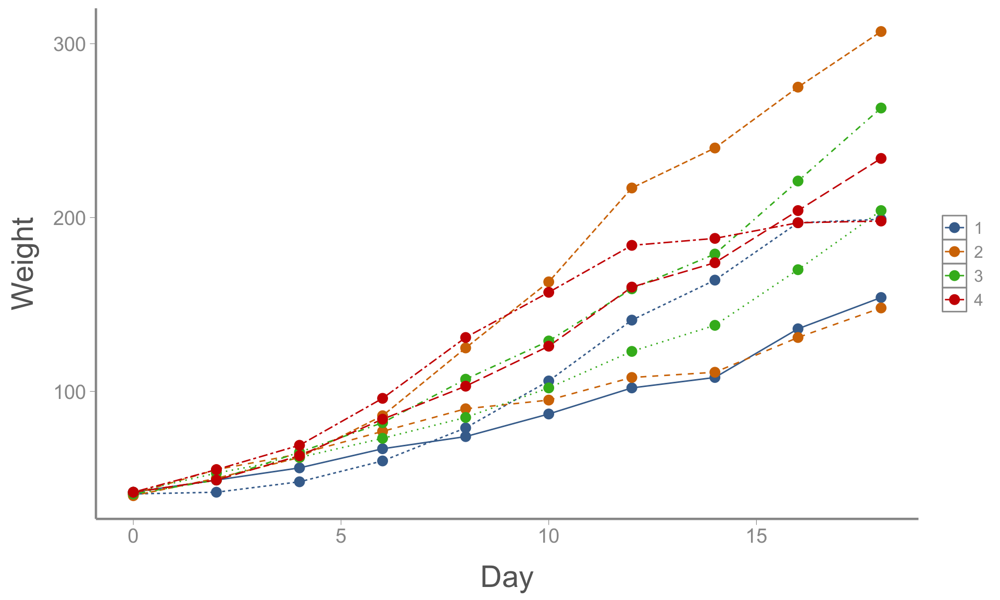

LECTURE 18: psuedoreplication part 2: repeated measures
Outline
1) Motivation
2) Data structure and statisical issues
3) Approaches
4) Analyzing repeated measures using linear mixed models
Motivation
In the last lecture, we learned about analyzing nested data
Observational units (i.e., subunits) are nested within experimental units (i.e., whole units)
In the most basic scenario (one categorical treatment variable), analysis of nested data is identical to the “ANOVA” design we learned about in lecture 9, as long as we specify the correct degrees of freedom
We will see slightly more complex scenarios with multiple treatment variables in lab (aka split-plot designs)
In this lecture, we will focus on a specific type of nested data that is common in many settings — “repeated measures”
Example
Suppose we want to test the effect of diet on the early growth of chickens
We assign each of 36 chicks to one of four diet treatments and then measure their mass every other day for 18 days
Weight
Chick
Diet
Day 0
Day 2
Day 4
Day 6
Day 8
Day 10
Day 12
Day 14
Day 16
Day 18
1
1
42
49
56
67
74
87
102
108
136
154
2
1
41
42
48
60
79
106
141
164
197
199
10
2
40
50
62
86
125
163
217
240
275
307
11
2
41
55
64
77
90
95
108
111
131
148
19
3
42
53
62
73
85
102
123
138
170
204
20
3
41
49
65
82
107
129
159
179
221
263
28
4
42
49
63
84
103
126
160
174
204
234
29
4
42
55
69
96
131
157
184
188
197
198
Chick data

Questions:
What is the experimental unit?
What is the observational unit?
How many treatment variables are there?
Repeated measures designs
General features
Whole units are called subjects
One or more treatments is applied to each subject
The response variable is measured multiple times on each subject
Time can be thought of as a treatment variable applied at the subunit level, but it can’t be randomly assigned
We are often most interested in the interaction between treatment and time
In some cases, one of the treatment variables might be applied part way through the experiment (e.g. BACI design)
Examples of repeated measures designs
To investigate the effect of three drugs, each drug is administered to 8 people, and each person’s heart rate is measured every 5 minutes for 4 time intervals
The effects of predator exclosures are assessed by monitoring prey abundance over multiple years in exclosures and control sites
The effect of dam removal is evaluated by measuring upstream fish abundance before and after dam removal at multiple rivers
In each case, there is a primary treatment variable of interest but also a focus on how the response variable changes over time
Data with this structure present several statistical issues that must be addressed for proper inference
Statistical issues
Non-independence:
As with nested data, observations within each subject are non-independent
This non-independence must be accounted for as part of the analysis
Non-randomness:
The main difference between repeated measures data and other types of nested designs is that “time” cannot be randomized
Options for analysis
There are multiple ways to analyze data from repeated measures designs
Traditionally, the most common analysis method is a split-plot ANOVA model with adjusted p-values. However:
Results are not robust in the presence of severely unbalanced data
p-value adjustments apply to the main treatment, not to time or time \(\times\) treatment interaction
Difficult to accommodate additional model structure (blocks, multiple random effects, etc.)
Because of these limitations, and because fitted mixed-effect models is now widely used, we will focus on analysis of repeated measures data using linear mixed-effect models
Linear mixed models
Increasingly, linear mixed models that account for autocorrelation are the preferred method to fit repeated measures data
Linear mixed models have several advantages over the split-plot ANOVA or profile analysis methods:
Highly flexible (e.g., can include additional random effects and interactions)
Can handle unbalanced designs
Both the lme4 and nlme packages provide methods for accounted for serial autocorrelation common in repeated measures data
Chick data
library(nlme)lmm2 <-lme(fixed = weight ~ Diet *Time, random =~ (Time-1)|Chick, data = chickdata,correlation =corAR1())summary(lmm2)
Linear mixed-effects model fit by maximum likelihood
Data: chickdata
AIC BIC logLik
2715 2758 -1347
Random effects:
Formula: ~(Time - 1) | Chick
Time Residual
StdDev: 2.564 15.1
Correlation Structure: AR(1)
Formula: ~1 | Chick
Parameter estimate(s):
Phi
0.8249
Fixed effects: weight ~ Diet * Time
Value Std.Error DF t-value p-value
(Intercept) 38.26 4.951 320 7.728 0.0000
Diet2 -2.83 7.002 32 -0.404 0.6887
Diet3 -6.48 7.002 32 -0.926 0.3616
Diet4 -0.63 7.002 32 -0.090 0.9288
Time 6.56 0.937 320 6.998 0.0000
Diet2:Time 1.85 1.325 320 1.399 0.1629
Diet3:Time 3.93 1.325 320 2.969 0.0032
Diet4:Time 2.61 1.325 320 1.967 0.0500
Correlation:
(Intr) Diet2 Diet3 Diet4 Time Dt2:Tm Dt3:Tm
Diet2 -0.707
Diet3 -0.707 0.500
Diet4 -0.707 0.500 0.500
Time -0.254 0.180 0.180 0.180
Diet2:Time 0.180 -0.254 -0.127 -0.127 -0.707
Diet3:Time 0.180 -0.127 -0.254 -0.127 -0.707 0.500
Diet4:Time 0.180 -0.127 -0.127 -0.254 -0.707 0.500 0.500
Standardized Within-Group Residuals:
Min Q1 Med Q3 Max
-2.4886 -0.8607 -0.2404 0.2688 2.3246
Number of Observations: 360
Number of Groups: 36
Chick data
Compare the results from the previous slide to a similar model that does not account for autocorrelation (look particularly at the SE estimates)
lmm3 <-lme(fixed = weight ~ Diet *Time, random =~ (Time-1)|Chick, data = chickdata)summary(lmm3)
Linear mixed-effects model fit by maximum likelihood
Data: chickdata
AIC BIC logLik
2972 3011 -1476
Random effects:
Formula: ~(Time - 1) | Chick
Time Residual
StdDev: 2.313 12.1
Fixed effects: weight ~ Diet * Time
Value Std.Error DF t-value p-value
(Intercept) 32.77 2.398 320 13.668 0.0000
Diet2 -2.58 3.391 32 -0.760 0.4530
Diet3 -8.96 3.391 32 -2.642 0.0126
Diet4 -0.06 3.391 32 -0.018 0.9854
Time 6.90 0.811 320 8.499 0.0000
Diet2:Time 1.57 1.147 320 1.369 0.1718
Diet3:Time 3.53 1.147 320 3.075 0.0023
Diet4:Time 2.52 1.147 320 2.197 0.0288
Correlation:
(Intr) Diet2 Diet3 Diet4 Time Dt2:Tm Dt3:Tm
Diet2 -0.707
Diet3 -0.707 0.500
Diet4 -0.707 0.500 0.500
Time -0.233 0.165 0.165 0.165
Diet2:Time 0.165 -0.233 -0.117 -0.117 -0.707
Diet3:Time 0.165 -0.117 -0.233 -0.117 -0.707 0.500
Diet4:Time 0.165 -0.117 -0.117 -0.233 -0.707 0.500 0.500
Standardized Within-Group Residuals:
Min Q1 Med Q3 Max
-2.5658 -0.6256 -0.0314 0.6650 3.4411
Number of Observations: 360
Number of Groups: 36
Summary
Which of the three methods should I use?
For balanced, experimental data, the simplest approach might be the split-plot option with adjusted p-values
For unbalanced data or observational studies (which often require additional model complexity), the most robust approach is likely linear mixed models with serial correlation